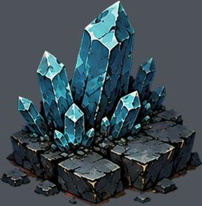
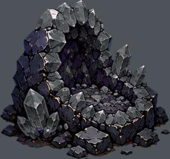
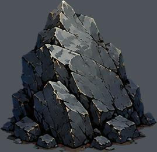
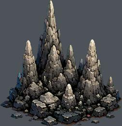
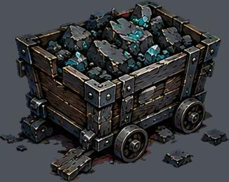
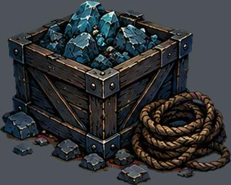
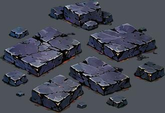
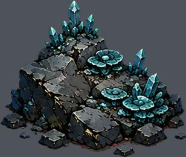
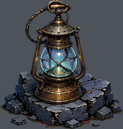
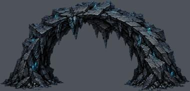

res://assets/biomes/crystal/prop-0.png
实例 18；运行画布高度 0.35–2.16 m
尺寸 [321, 327]；透明轮廓 (1, 1, 321, 327)
语义支点、占地、挂点尚需逐图标注下列高度是画布高度，不是实体净高。透明包围盒不等于脚点或占地。

实例 18；运行画布高度 0.35–2.16 m
尺寸 [321, 327]；透明轮廓 (1, 1, 321, 327)
语义支点、占地、挂点尚需逐图标注
实例 87；运行画布高度 0.35–1.25 m
尺寸 [336, 313]；透明轮廓 (1, 0, 335, 313)
语义支点、占地、挂点尚需逐图标注
实例 349；运行画布高度 0.35–10.46 m
尺寸 [346, 334]；透明轮廓 (1, 0, 346, 334)
语义支点、占地、挂点尚需逐图标注
实例 238；运行画布高度 0.36–1.25 m
尺寸 [319, 328]；透明轮廓 (1, 1, 318, 328)
语义支点、占地、挂点尚需逐图标注
实例 93；运行画布高度 0.38–1.24 m
尺寸 [374, 298]；透明轮廓 (0, 0, 374, 298)
语义支点、占地、挂点尚需逐图标注
实例 86；运行画布高度 0.35–1.23 m
尺寸 [353, 283]；透明轮廓 (0, 1, 353, 283)
语义支点、占地、挂点尚需逐图标注
实例 257；运行画布高度 0.10–1.25 m
尺寸 [329, 226]；透明轮廓 (0, 0, 329, 226)
语义支点、占地、挂点尚需逐图标注
实例 137；运行画布高度 0.36–1.24 m
尺寸 [328, 277]；透明轮廓 (1, 0, 328, 277)
语义支点、占地、挂点尚需逐图标注
实例 109；运行画布高度 0.36–1.25 m
尺寸 [317, 333]；透明轮廓 (0, 0, 317, 333)
语义支点、占地、挂点尚需逐图标注
实例 57；运行画布高度 10.27–10.98 m
尺寸 [1429, 686]；透明轮廓 (2, 2, 1427, 684)
语义支点、占地、挂点尚需逐图标注